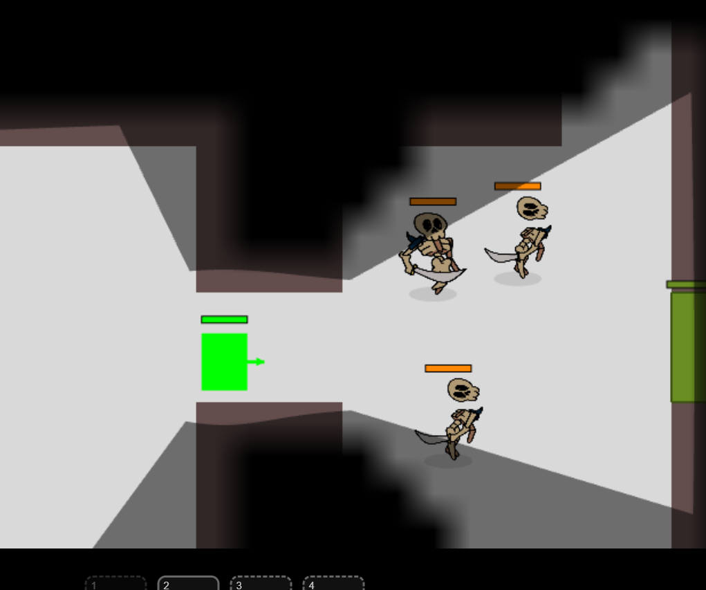
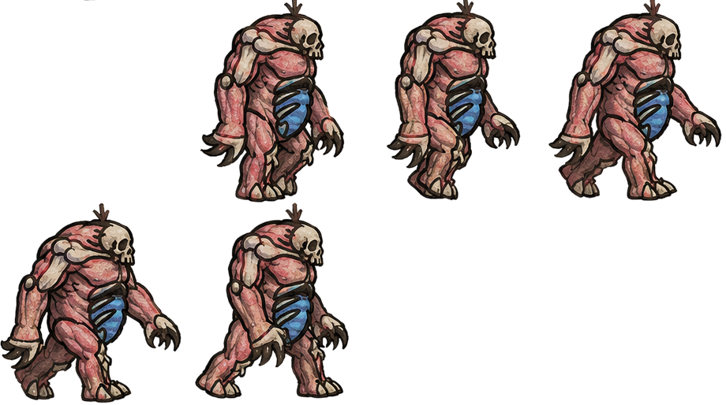
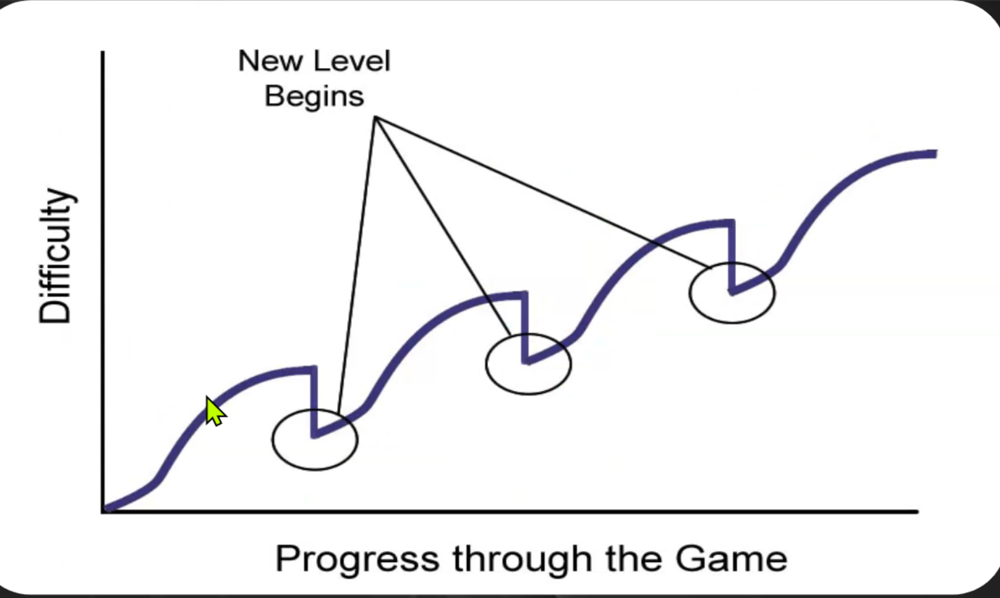

El proceso en imágenes







La Cripta de Nekkman es un dungeon crawler top down de 3 niveles, con tres tipos de enemigo con IA propia, sistema de hechizos, trampas, un editor de mapa y un editor de parámetros hechos a medida, y una historia sobre un nigromante que busca convertirse en liche. Lo desarrollé como TP2 de Diseño de Videojuegos en Image Campus, trabajando junto a Claude Code como asistente de desarrollo, y aplicando en el camino la teoría de diseño de niveles y balanceo vista en la cursada.
3 de agosto, 00:32
Llevo toda la tarde en el Editor de Mapa: acomodo antorchas, ajusto trampas, decido dónde aparece cada enemigo. Cierro conforme. Abro de nuevo para seguir. Los cambios no están. Una tarde entera de trabajo, desaparecida.
"Lo voy a tener que hacer todo de vuelta, se me borró todo... Necesito que esto se guarde."
Franco, 3 de agosto de 2026, 00:32
Ese incidente terminó siendo uno de los puntos de aprendizaje más grandes del proyecto: sobre guardado de datos, sobre confiar en un flujo que nunca había puesto a prueba, y sobre cómo reaccionar cuando algo se rompe en medio de un desarrollo con fecha de entrega.
De un rectángulo verde a un personaje real
El código arrancó el 20 de julio, sobre un GDD ya escrito. El jugador nació siendo un rectángulo verde, apodado "Yamel" en los comentarios del código, nombre que duró casi dos semanas.
Los primeros días fueron los de mayor densidad de mecánicas nuevas: combate direccional, sistema de trampas, y la decisión con más impacto en todo el desarrollo posterior, un panel de "Editor de Parámetros" para ajustar variables del juego sin recompilar nada. Esa herramienta terminó siendo el corazón del proyecto: cada ajuste de vida, daño, velocidad, luz o mapa pasó por ahí.


El salto visual más grande llegó sobre el final: reemplacé el rectángulo verde por un personaje completo (pack "Adventurer", 16 spritesheets, 128 frames de animación entre caminar, correr y dos ataques que alternan), y le agregué un shader tipo CRT y un HUD con sprites reales.

Los problemas que más enseñaron
Lo más valioso del proyecto no fueron las mecánicas que salieron bien a la primera, sino los problemas que hubo que diagnosticar de verdad.


Se descartaron seis hipótesis distintas (sprite mal recortado, alfa rota, un bug de datos verificado celda por celda) hasta llegar a la conclusión de que probablemente era caché del navegador. Lo que queda de ese proceso no es la causa exacta, sino el método: investigar de forma sistemática, descartando hipótesis una por una, y aceptar que a veces hay que cerrar un bug con la mejor explicación disponible.
La prueba de que había pasado quedó en los propios archivos: la versión de backup antes del arreglo tenía 109 elementos guardados, la versión posterior tiene 247. El arreglo final: el editor escribe a disco de inmediato en cada acción, y las configuraciones que necesitan un margen se fuerzan a guardar igual si detectan que la pestaña se está por ocultar con algo pendiente.
Cuando la teoría se volvió números
En paralelo al desarrollo, la cursada incluía una clase sobre balanceo de niveles y curvas de dificultad. Esa teoría se trabajó en una sesión separada durante tres semanas, sin tocar el juego real, hasta que recién casi al final del proyecto se conectaron ambas cosas.
La aplicación fue literal: cada característica de cada enemigo (vida, daño, velocidad, armadura, rango) se normalizó a una escala de 1 a 10, se pesó según su impacto real, y se calculó una constante de dificultad por enemigo, por trampa y por hechizo. El resultado más honesto del proyecto salió de ahí: la sala de entrada, que se suponía la más fácil, calculó una dificultad más alta que el nivel pensado como clímax final, que en ese momento todavía no estaba terminado de construir.

Ese resultado no se ocultó, porque es exactamente el tipo de brecha que un buen proceso de diseño tiene que poder detectar y nombrar. Lo que faltó en ese momento fue el paso final: comparar ese número contra la sensación real de jugarlo, algo que solo se logra con playtesting.
La semana final
En la última semana antes de la entrega se terminó de construir el Nivel 3, se rediseñó la IA de los enemigos para que dejaran de perseguir en línea recta sin variación (flanqueo, kiting del mago, memoria de la última posición vista), y se resolvió el bug más difícil de todo el proyecto: una puerta que se veía perfectamente destrabada pero no llevaba a ningún lado, porque el corredor detrás estaba tapiado por 73 bloques invisibles nunca iluminados. Encontrarlo requirió teleportar al personaje celda por celda en un navegador de prueba, el mismo tipo de bug silencioso que se ve bien en pantalla pero no lo está por dentro.
En los últimos días antes de la entrega se cerraron los pendientes que quedaban: los CSV de balanceo ya están subidos al repositorio, se corrió el playtesting formal con un número de dificultad percibida por nivel, se cronometró la duración real, y el link de Miro quedó incluido en el GDD final. Jugando la versión casi terminada un día antes de entregar aparecieron varios detalles de jugabilidad más para ajustar (timing de trampas, hitboxes de enemigos) que quedaron anotados pero sin tocar por tiempo. Queda como aprendizaje para la próxima etapa.
Lo que me llevo de este proyecto
Si tengo que resumir en una idea lo que aprendí en estas seis semanas, es que hacer un juego no se hace solo con instinto. Antes de este proyecto diseñaba en base a lo que sentía que estaba bien, un conocimiento naturalizado de haber jugado muchos juegos, sin poder explicar del todo por qué. Ahora sé que existe un método concreto, y aprender a aplicarlo fue lo más importante de todo el proceso.
El balanceo de niveles funcionó como referencia central: poder entender con números qué partes de un nivel están balanceadas y cuáles no, en vez de guiarse solo por la sensación de que algo se siente difícil, fue una de las herramientas más útiles de toda la cursada. Al mismo tiempo, fue ahí donde más aprendí sobre mis propios límites de tiempo: confié en ese cálculo de papel más de lo que debería durante la mayor parte del desarrollo, y el playtesting en vivo quedó relegado a último momento en vez de correrse en paralelo desde antes. El tiempo quedó mal distribuido entre desarrollo y testing, y eso es lo que más me llevo para planificar mejor la próxima vez.
Construir toda esta experiencia trabajando junto a un asistente de IA fue, de todas formas, un desafío interesante y divertido de principio a fin. Y por encima de cualquier mecánica puntual, lo que más importa de todo el proceso es haber aprendido los pasos que hay que seguir para diseñar un nivel antes de escribir la primera línea de código. Eso es lo que más me llevo de esta materia.